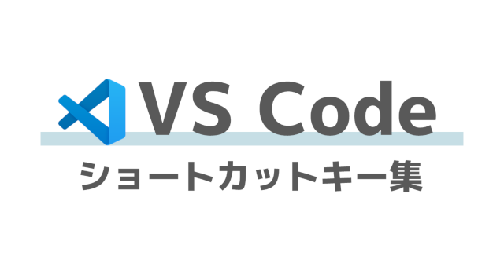
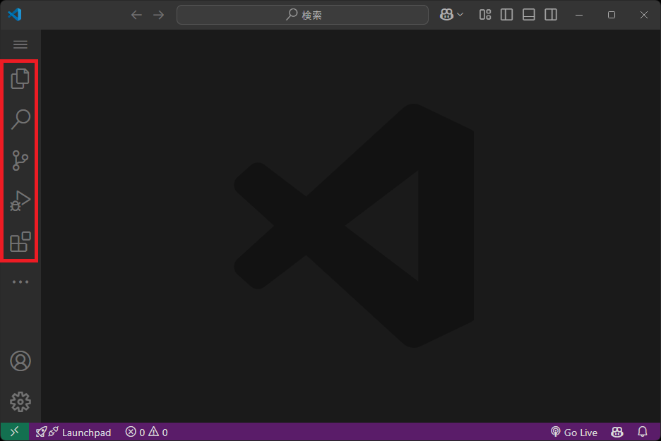

VS Code ショートカットキー集

VSCodeのショートカットキーを整理しました。
メニュー
VS Codeの左にあるメニューを選択時に使うショートカットキーです。

| よく使う | 操作内容 | ショートカットキー | 備考 |
|---|---|---|---|
| エクスプローラーを開く | Ctrl + Shift + E |
||
| ★ | 検索を開く | Ctrl + Shift + F |
|
| ソース管理を開く | Ctrl + Shift + G → G |
||
| 実行とデバッグを開く | Ctrl + Shift + D |
||
| 拡張機能を開く | Ctrl + Shift + X |
フォルダを開く
VS Codeのフォルダやワークスペースを開くときに使うショートカットキーです。
| よく使う | 操作内容 | ショートカットキー | 備考 |
|---|---|---|---|
| ★ | 最近開いた項目を選択 | Ctrl + R |
|
| ★ | フォルダを閉じる | Ctrl + K → F |
|
| フォルダを開く | Ctrl + K → Ctrl + O |
編集
エディターの内容を編集するときに使うショートカットキーです。
| よく使う | 操作内容 | ショートカットキー | 備考 |
|---|---|---|---|
| ★ | 該当行と同じ行をつくる | Alt + Shift + ↑ Alt + Shift + ↓ |
↑・↓どちらを押しても下にコピーされる。 複数行まるごとコピーできる。 |
| ★ | 行削除 | Ctrl + Shift + K |
|
| ★ | 行を上下にずらす | Alt + ↑ Alt + ↓ |
|
| ★ | 選択行をコメント | Ctrl + / |
プログラムの種類に合わせたコメントにしてくれるのが嬉しい。 （pythonなら#、javaなら//） コメント上に行うとコメントが解除される。 |
選択
エディターの内容を選択するときに使うショートカットキーです。
| よく使う | 操作内容 | ショートカットキー | 備考 |
|---|---|---|---|
| ★ | 同じ単語を選択 | Ctrl + D |
|
| 単語ごとに選択 | Ctrl + Shift + ← Ctrl + Shift + → |
||
| ★ | 行の先頭まで選択 | Shift + HOME |
|
| ★ | 行の末尾まで選択 | Shift + END |
|
| ★ | 矩形選択 | Ctrl + Shift + Alt + ↑ Ctrl + Shift + Alt + ↓ |
カーソルと同じ位置で複数行選択できる。 |
フォーカス
VS Codeのビューのフォーカスを移動するときに使うショートカットキーです。
| よく使う | 操作内容 | ショートカットキー | 備考 |
|---|---|---|---|
| ★ | ターミナルにフォーカス | Ctrl + @ |
|
| ★ | エディタにフォーカス | Ctrl + 1 |
設定
設定関連を開くときに使うショートカットキーです。
| よく使う | 操作内容 | ショートカットキー | 備考 |
|---|---|---|---|
| ★ | 設定を開く | Ctrl + , |
|
| ★ | コマンドパレットを開く | Ctrl + Shift + P |
表示 > コマンドパレット |
| キーボード ショートカットを開く | Ctrl + K → Ctrl + S |
コマンドパレットでよく使うもの
Ctrl + Shift + Pでコマンドパレットを開いてから使ってください。
| よく使う | 操作内容 | コマンド | 備考 |
|---|---|---|---|
| ★ | ウィンドウを再読み込み | Developer: Reload Window |
VSCodeの設定を変更時など、設定の読み込み時にも便利 |
| ★ | 大文字に変換 | Transform to Uppercase |
選択中の文字を英語大文字に変換 |
| ★ | 小文字に変換 | Transform to Lowercase |
選択中の文字を英語大文字に変換 |
| ★ | Python: インタープリターを選択 | Python: Select Interpreter |
アクティブ化するPythonの場所を設定。venv利用時便利 |
| ★ | Javaプロジェクトを作成 | Java: Create Java Project |
Javaの基本プロジェクトを作成 |
| ★ | Springプロジェクトを作成 | Spring Initializr: Create a Gradle projectSpring Initializr: Create a Maven project |
JavaのSpringプロジェクトを作成 |